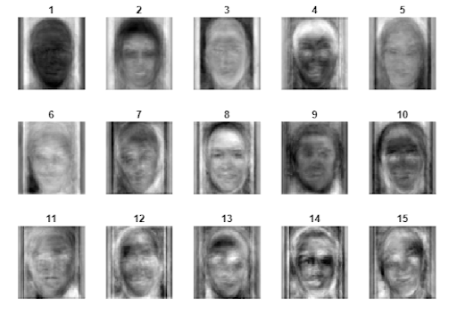
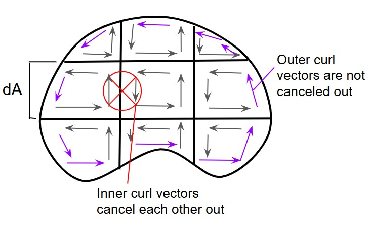
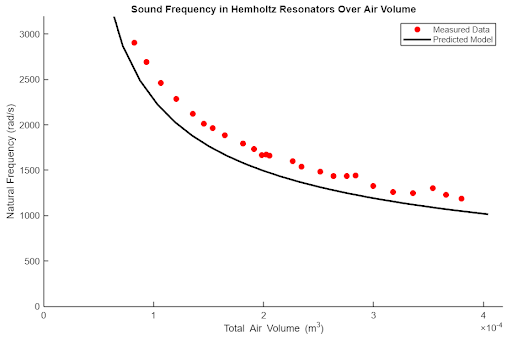
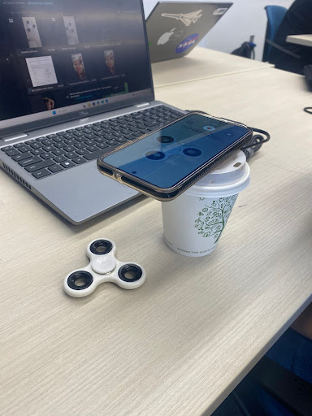

Projects

Facial Recognition of Siblings
For this project, I used principle component analysis, eigenvalues, and pixel to pixel comparison with a covariance matric to predict if images of people were siblings. After projecting pairs of images onto a reduced dimension "face-space", we found the average distance between sibling and non-sibling faces and calculated a threshold value from that.

Fluid Flow & Navier-Stokes
For a final project in QEA 2, which focuses on multivariable calculus, my partner and I taught about fluid flow and the Navier-Stokes equations. We made an engaging game to test what our peers had learned. Our teach-in also included divergence and curl, Maxwell's Equations, Gauss's Divergence Theorem, Stokes's Theorem, Green's Theorem, and Lorentz Force Law.

Helmholtz Resonator
In this project, we used second order differential equations and Newton's Second Law to predict sound frequency of a Helmholtz Resonator. We made connections between the physical parts of our bottle oscillator system and our 2nd order ODE, and identified assumptions that we made that led to discrepancies between our prediction model and actual results.

Fidget Spinner
In this project, we used a first order differential equation to predict the angular acceleration of a fidget spinner. We collected data using a smartphone video, and analyzed the data with MATLAB. This served as an introduction to Fast Fourier Transform and learning how to account for aliasing.